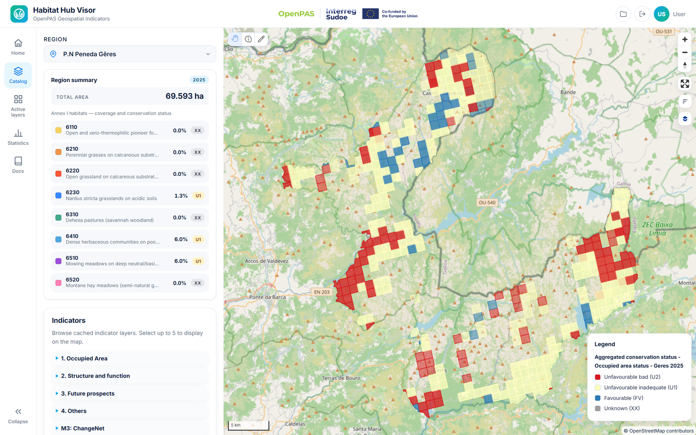
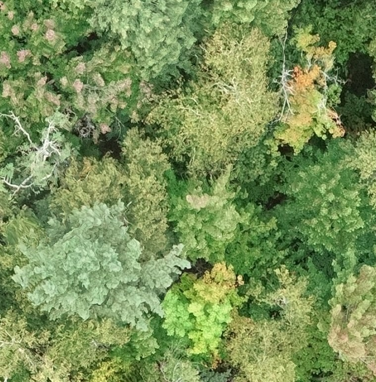
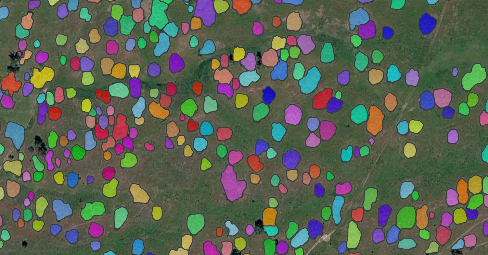
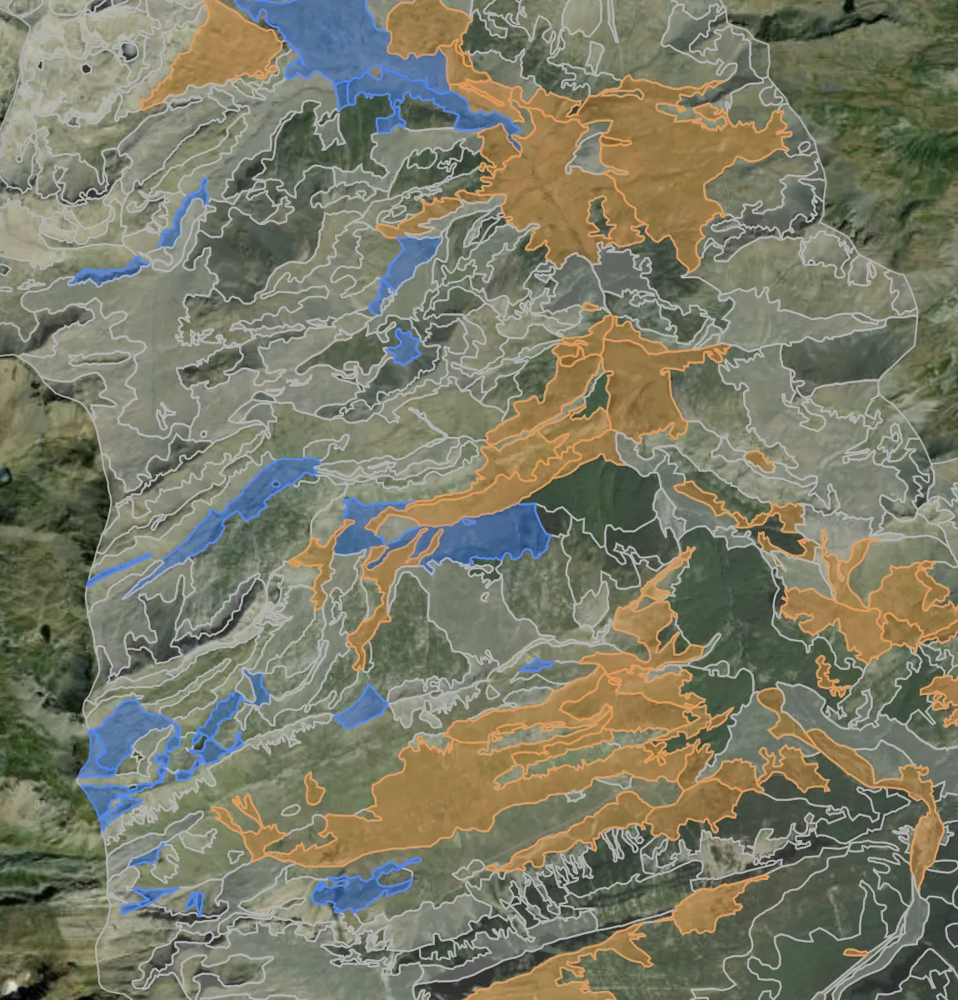

/
Para · ONG y conservación
Ayudamos a organizaciones de conservación a monitorear hábitats, medir resultados y justificar financiación, con datos de satélite fiables y a bajo coste, sin montar un equipo técnico propio.

Lo que os frena
Salir al terreno no escala con el presupuesto de una subvención. Cubrir un paisaje entero, año tras año, queda fuera de tu alcance.
Los financiadores quieren impacto medible y comparable en el tiempo, no buenas intenciones ni fotos sueltas.
No tienes capacidad de teledetección dentro de casa, y contratar un equipo GIS permanente no es una opción realista.
Del satélite a la evidencia de impacto




01
Delimitamos tu territorio y fijamos un punto de partida claro con imágenes de satélite: así todo lo que venga después se puede comparar.
02
Nuestros modelos segmentan el paisaje y detectan cómo evoluciona: qué hábitats se mantienen, cuáles se degradan y dónde hay presión.
03
Traducimos las imágenes en indicadores comparables año tras año, con números que respaldan lo que ves sobre el terreno.
04
Entregamos mapas y evidencia clara y visual, lista para memorias, solicitudes de subvención y rendición de cuentas.
En qué te ayudamos
Trabajamos como tu socio técnico: ponemos el satélite, los modelos y los informes, y tú te centras en el terreno y en tu misión.
Seguimiento del estado de hábitats Natura 2000, pastizales y bosques a partir de imágenes de satélite.
Verifica que la naturaleza se recupera y que tus acciones de restauración funcionan, con evidencia año tras año.
Somos tu socio de monitoreo geoespacial para programas de comunidad y clima, con datos que acompañan a las personas.
Evidencia clara y visual para justificar subvenciones y rendir cuentas ante quien financia tu trabajo.
Trabajo real
Con OpenPAS trabajamos en el estado de conservación de pastizales Natura 2000, midiendo cómo evolucionan estos hábitats a partir de datos de satélite. Y somos socio de monitoreo de End World Hunger Ohio para un programa de huertos comunitarios y adaptación climática. Son proyectos modestos, pero reales, y muestran cómo aplicamos los mismos datos a causas muy distintas.
El siguiente paso
Cuéntanos qué territorio proteges y qué necesitas demostrar. En una llamada te decimos qué datos podemos poner detrás de tu impacto.
Agenda una llamada